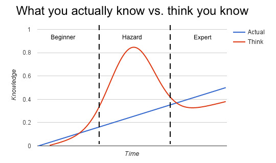

I like to observe patterns in life, both in myself and in others. I do this as part of an introspective process that seeks to better myself, acknowledge mistakes, and set direction.
One set of patterns I've observed repeatedly is how skill progression manifests as people go from beginners to experts in a topic. As a teacher, I like to share these observations because it helps students understand where they are, and what their next steps might be.
(Note this is *MY* empirical understanding based on some knowledge, and a lot of observation of myself and of others across many different disciplines. I don't mean to proclaim myself to be an expert in the process of learning, which probably makes this writing a hazard.
For conversational purposes, I divide the progression into 4 phases: Scribbles, Core, Patterns, and Mastery (and beyond). As implied, there are actually more than 4 phases – continuing indefinitely. However, after the 4th phase, additional development becomes esoteric. It’s only interesting to other masters of the skill in question, so I don’t treat that here.
For humor value, I refer the reader to this graph based loosely on the Dunning-Kruger effect:
Each of the phases repeats this entire skill progression, resulting in a stair-step pattern of growth, alternating hubris and humility. Don't deny it, we all go through this. I have.
I refer to people in the hazard phase as being in "knowing mode", as opposed to being in "learning mode". I tell my students to strive to be in learning mode at all times, and I employ that same principle in my professional career. When interviewing candidates for jobs, I don't hire people who are in knowing mode.
For reference, I like to share the Dreyfus model for skill acquisition. In this model, beginners are driven by facts and rules in a narrowly scoped viewpoint, and experts are driven by intuition with a "big picture" view.
The goal is to integrate skills into muscle memory. "Muscle memory" is the terminology describing a skill firmly embedded in the mind of the practitioner, so much so that they can do it without thinking. Your hands know how to steer the car, you don't think about it.
I remind students about Malcolm Gladwell's "rule", 10,000 hours is an expert (that's 5 years of full time employment, or 10 years of hobbyist activity). This is not just about time spent, but also the passage of time. You must spend at least this much time in the pursuit of a particular skill to be an expert, you aren't magically an expert after 10,000 hours.
I treat that time as independent of the rules of success in any given domain. In other words, being the only practitioner of a given skill (in a region) doesn't in itself make you an expert at it, even if you are successful (like earning millions of dollars by doing it).
In my experience, you can't rush the skill progression, not even if you are a genius. I say this as somebody who has been in the room with some of the smartest people in the world. Artificially deciding to portray the characteristics of a later phase of development, or otherwise seeking to accelerate the learning process doesn't actually move the practitioner ahead any more quickly (and might actually have the opposite effect). You don't become a black belt just by wearing the uniform, but you'll get pounded extra hard when the other black belts discover your lack of skill.
I do not mean to imply in any of this that being of a higher level of skill in the progression of cognitive viewpoint means that one is better than those in the lower levels. It does not preclude the possibility that a prodigy emerges from the scribbles phase and creates great works of art, nor does it doom us all to the same progression. These are patterns, and different people experience them slightly differently. Exceptions happen, but are rare.
When the budding artist first discovers a new skill they want to learn, they excitedly begin to explore possibilities in a random search. I call this phase "scribbles", because the most visible analogy is a child discovering crayons.
People in this phase of development are characterized by extreme excitement about their new skill, obsessive information gathering (research), and random explorations based off of very small amounts of information.
At some point, the budding artist recognizes their lack of knowledge, and they will try to organize their skill development into a structured plan for learning. They will often seek out instruction at this point, and rapidly become frustrated if it doesn't go fast enough for them.
People in this phase fixate on technical aspects of their craft, sometimes getting buried in minutia. They practice obsessively, trying over and over until they get it right. They seek external validation of their results, as they are unable to self-evaluate. Finding other people at a similar skill level can be a very bonding experience as they learn together (though there are some risks of reinforcing incorrect skills development with that).
Dogmatic rules are prevalent parts of the information gathered at this phase, and students may demonstrate a proclivity to be a “rules lawyer” or exhibit fanatical devotion to a particular master of the craft (A.K.A. “fanboy”), with these behaviors continuing through the patterns phase. They will (almost religiously) cite expert testimony as justification to adhere to a particular line of thinking or reject an alternate line of thinking, as opposed to adopting the line of thinking their experience tells them is best. This behavior is associated with the mistaken belief that rote memorization of the rulebook dictates success, or that every problem has only one correct solution and that fact is not open for debate.
Some people who are in early transition to this phase of development from scribbles might begin to understand that patterns are next, but eschew the path to patterns in favor of trying to figure it out for themselves/establish their own style/avoid copying others. This behavior is especially visible if the area of exploration is highly saturated with existing masters (thereby limiting the new practitioner’s ability to gain mind-share), and is usually pursued in the misguided belief that there are new styles to be discovered. In my opinion, it's better to take advantage of the knowledge gleaned from the failures that have come before, and find differentiation along the way rather than risk big (avoidable) failures early on. Some people have to learn by making their own mistakes though, which can be slow, expensive, and dangerous.
As core skills become cemented, the person enters a new phase where they seek understanding of previously discovered ways to apply those skills. I call these "patterns"; they are lists of steps that assume you have the core skills to execute said steps.
Think of learning how to cook... once you've learned how to build the mother sauces, you can open a book of recipes and try all sorts of different flavors that have been developed and refined over many centuries.
At the beginning of this phase, opportunities tend to open up. Practitioners tend to be recognized as members of the community, and consumers of the skill set will seek the new talent.
Students should be particularly mindful at this point, because these opportunities are one of the primary causes of what I call "go go disease" A.K.A. "do all the things," which is the onset of the hazard phase. Consumers who are relatively ignorant of the underlying skill progression will praise the practitioner for their results, but as their feedback is not coming from an informed source, it results in a confirmation bias that artificially inflates the ego.
As practitioners move toward the middle of this phase, they will often hit a lull in pattern acquisition because there are too many patterns to integrate. This is where specialization can come in. Recognizing that they can't do it all, students will focus on a single style.
Students also begin trying in earnest to differentiate themselves during this phase, believing they can create something new. They may start to "invent" patterns that solve problems at hand. An art professor of mine once said, "There is nothing new, but don't let that stop you from trying." What she meant was, "continue exploring, but go get the history book because this has been done before, better, and by people more knowledgeable than you."
This hubris is especially associated with the "hazard" phase of skills progression, and is often when people start moving towards teaching others in non-professional contexts (i.e. those that don't require certification of some sort). For this reason, I advise people to hesitate when they first get the idea to start teaching. You don't yet know what you don't know.
Most students are not able to exit this phase without an event that kicks them into introspection, and leads to more pattern learning. I call this the "Aha! moment."
Mastery, also called "artistry", "void", or "riffing", is the phase after patterns have become muscle memory. When you know enough patterns to begin taking them apart piece by piece, and reassemble them differently. Combining patterns, and solving problems intuitively rather than by in-depth analysis. Creating new (derivative) patterns is normal in this phase.
Mastery is the point in expertise when theories of style evolve, the practitioner thinks in depth about what they do, and they explore the intellectual and practical components of the art-form. Masters have a differentiating factor, and they understand where that places them with respect to competing (and complimentary) practitioners. They may seek to share this information as a means of teaching, mostly aimed at others seeking mastery.
For example, listen to the words of any great master you can identify, they will hardly ever address the process of learning or teaching core skills. Instead, they will focus on the unique patterns and elements of their style, their sources of inspiration, and their goals.
When you have an opportunity to listen to a master, pay attention to this part. Too often, beginners believe mastering the technical component of a skill is equivalent to mastery of the domain, especially if the craft involves tools (photography, painting, etc.). Listening to a master talk will make clear the tool itself is a necessary element for success, but not the key to it.
Beginners will sometimes try to leap-frog into this phase, erroneously believing they are prodigies who know enough to just riff. In fact, they are just in the scribbles phase exhibiting randomness. These are the most dangerous people around, i.e. don't let them cook for you, you will die.
The very first thing you learn is the thing you go back to repeatedly. This can be a good thing if you find comfort there, or it can be a bad thing if the first thing you learned is an undesirable habit.
Bad habits learned early might hinder your development in many areas, or it might dog you throughout your career.
Homing can require a lot of thought and processing to overcome, and you might have to stop and realize that you never effectively left the scribbles phase in order to unlearn that bad habit.
I encourage students to be introspective, and re-home themselves periodically (i.e. try new things), especially if they find that a bad habit is getting in the way.
One of the defining characteristics of the entire progression is that the characteristics of the next phase are essentially invisible to the practitioner. Everything looks like a random, independent thing to someone on the scribbles phase. To someone in the core phase, even the most rudimentary pattern is full of overwhelming complexity. A student of patterns does not comprehend the void element that lies ahead.
Not only is the next phase invisible, but the language of that phase is gibberish. Try to explain being in love to someone who has never been in love. They will try to relate it to the experiences they have had, but absent the actual knowledge, there is no way to convey the concept. Imagine that from the other way around – you have been told your whole life about this thing called love. You want so much to understand it, you know it should happen, but the words of your lovelorn friend make no sense – can’t eat, can’t sleep, butterflies in your stomach, feeling light on your feet…
So this brings me to the question, how do you know what phase you are in? The answer is that you know by observing whose company you keep when discussing the topic. You will quickly become frustrated by trying to explain the marvel of your craft to somebody who simply does not have the knowledge to comprehend your words. And likewise, having a master pontificate on things that don’t sound like the next logical step for your own knowledge becomes tedious. You will listen selectively for the parts you recognize as new knowledge, possibly even rejecting the entire conversation with the view the speaker does not know what they are talking about.